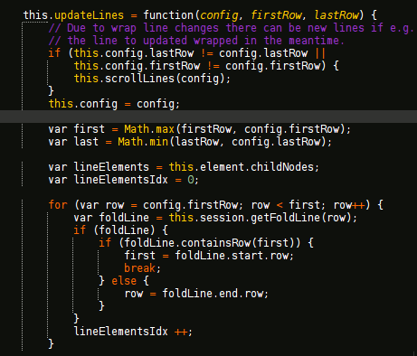

CamelCap is a visual aid for reading CamelCase code in an ACE editor They are often used for code editing in popular sites, such as GitHub or Cloud9
It works by highlighting uppercase characters in the middle of the MixedCase identifiers.
To use it, click on the bookmarklet while your browser is visiting a page with an ACE editor. Initially, scrolling in the editor may be needed for a correct display.
More information about bookmarklets on Wikipedia
Animation showing the difference:
